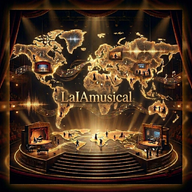

Exploramos un nuevo modelo de entretenimiento, dónde se muestras las Cartas de historia de una forma interactiva. El usuario en un principio da al botón play y visualiza el audiobook interactivo. Puede contestar a una serie de preguntas y puede descubrir nuevos "Secretos" de esa historia visualizada. Al final puede votar a su criterio según le haya gustado esa historia.

NACIDO DE LAS ESTRELLAS
Revista de tecnología y análisis de la inteligencia artificial
Presentación de nuestra página web
Esta edición especial se adentra en cómo la Inteligencia Artificial (IA) está transformando la creatividad y el aprendizaje. Olvídate de los complejos métodos tradicionales para empezar; ahora la tecnología es un verdadero puente conceptual.
Encontrarás historias sobre cómo estudiantes usan IA para componer, cómo estructuramos proyectos de "Storycards" interactivos y técnicas para capturar el paisaje sonoro digital basándonos en los conceptos más avanzados que hemos explorado juntos.
Índice de Temas
- 1. Presentando un nuevo modelo de Cartas de Historia
- 2. Planificación de un proyecto
- 3. Guiones para las cartas de historia
- 4. El futuro de la narrativa
- 5. Encontrando respuestas.
- 6. Creando un top de Cartas de historia.
- 7. El valor de las Cartas de historia
Creando un estilo
Planificación de un proyecto

Descubre- Elige- Conecta.
Guiones para las cartas de historia

Técnicas avanzadas para redactar guiones adaptados a entornos ramificados. Aprende a capturar la atención del lector mediante múltiples caminos narrativos.
El futuro de la narrativa

Analizamos el impacto de las tecnologías emergentes en la forma en que consumimos e interactuamos con historias digitales e inteligencias artificiales.
Encontrando respuestas

Espacio dedicado a resolver las dudas principales de los usuarios sobre el funcionamiento de la plataforma y el aprendizaje interactivo.
Creando un top de Cartas de historia
Metodología y criterios aplicados para clasificar las mejores historias según las interacciones y votaciones de la comunidad.
El valor de las Cartas de historia
Reflexión sobre el impacto educativo, creativo y de entretenimiento que aporta la combinación de IA, voz y narrativa modular.